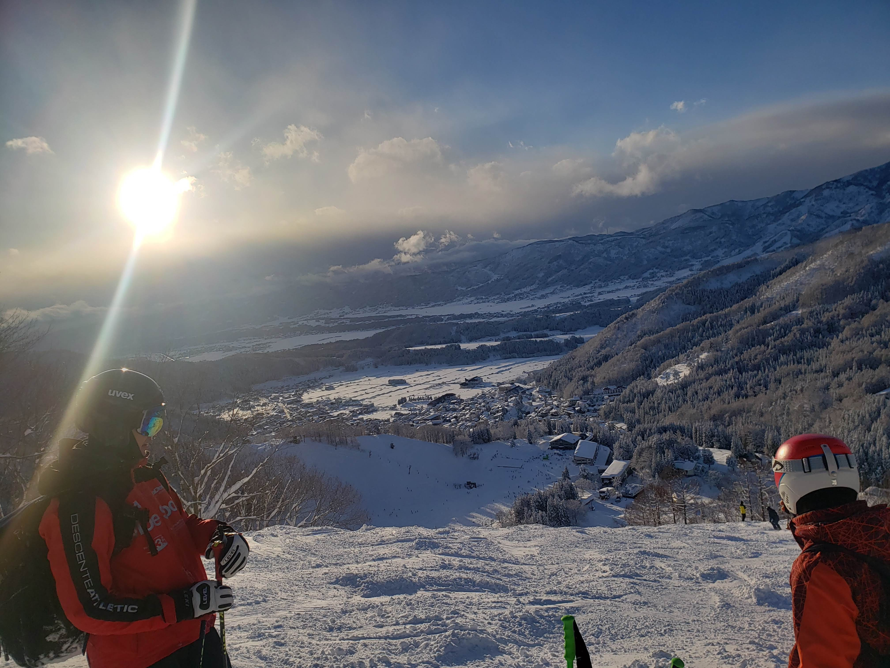

TOP
HOME
PROFILE
RESEACH
NEWS
ACSESS
Welcome to my homepage!
AI × robotics
HOME
ホームページを見ていただきありがとうございます！
山田響生と申します。賢いロボットを作るべく日々研究しています。
自分のことをより知ってもらえるよう更新していきますので、
是非見ていただけると嬉しいです！

PLOFILE
生年月日
2000年12月8日
趣味
アルペンスキー・テニス・
出身高校
東京都立三鷹中等教育学校
挑戦中なこと
筋トレのための食事
RESEACH
掲載開始までお待ちください。
NEWS
04/2022 原田研究室に所属しました。
04/2022 ホームページを作成しました。
ACSESS
名前
山田響生
郵便番号
560-0043
研究室
大阪府豊中市待兼山町１－３
大阪大学基礎工学研究科F棟531-533
mail address
yamada@hlab.sys.es.osaka-u.ac.jp
2022年5月1日